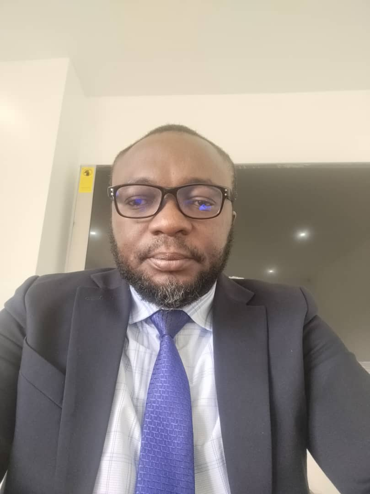

Babatunde John Ogunleye | WDD 130
Hello, my name is Babatunde John Ogunleye, I am from Abuja, Nigeria. I love flowers.I am a dynamic professional with a strong background in administrative operations, procurement, and project management. Currently serving as General Manager at Gavel Global Projects Nigeria Limited, I combines leadership with strategic execution. I holds several certifications in HR, public speaking, and business analysis, and further expanding my expertise through a software development program at BYU Pathway Connect. Driven by a passion for efficiency and impact, I am building a niche consulting brand focused on optimizing procurement systems for SMEs. My ability to align operational structures with business goals makes me a valuable asset in any organizational setting. I am also working toward creating sustainable income outside my 9-5. Through consistent learning and execution, I am positioning myself as a go-to expert for business process improvement in Nigeria.